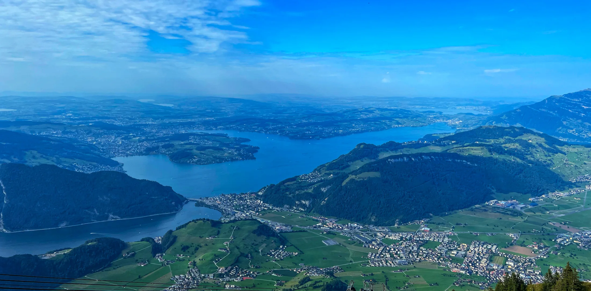
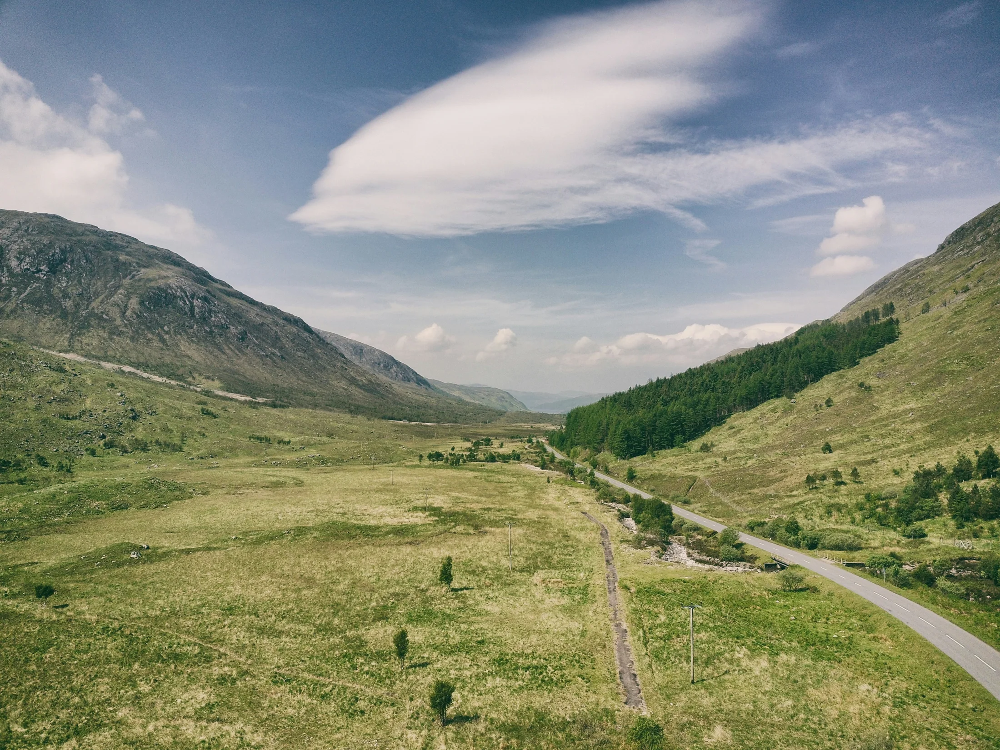
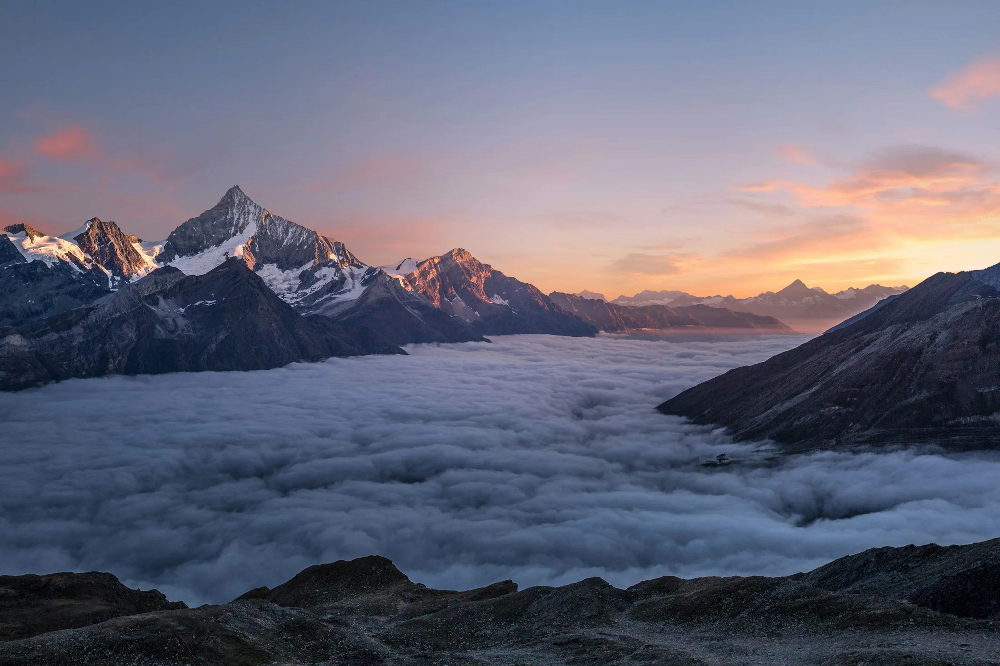
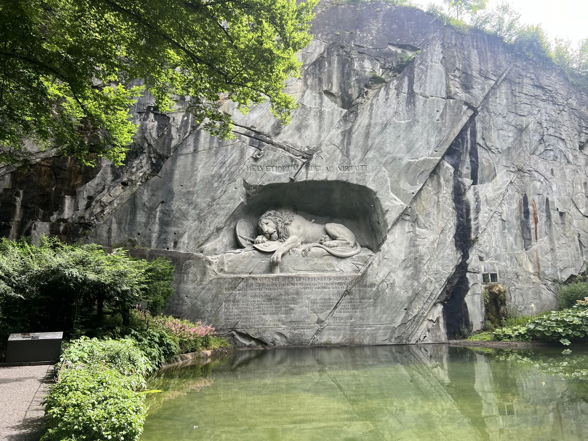
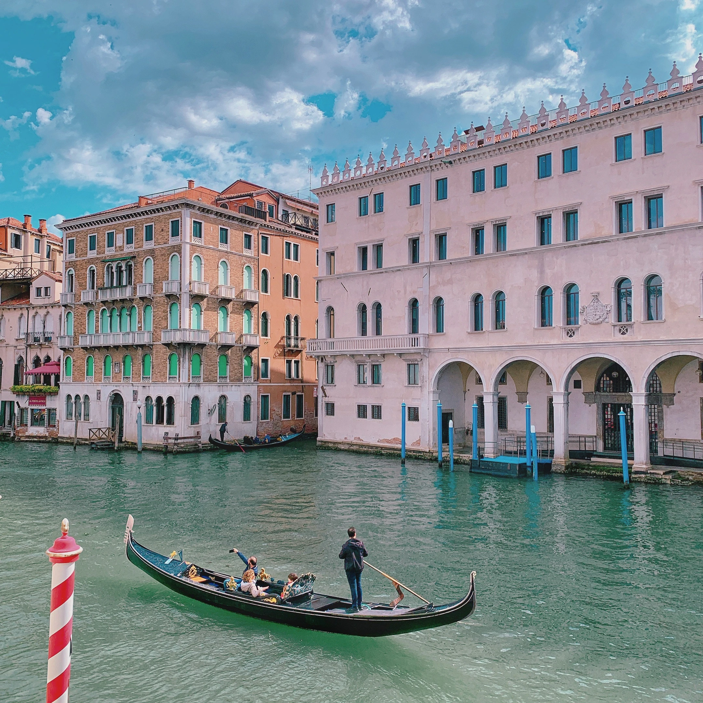
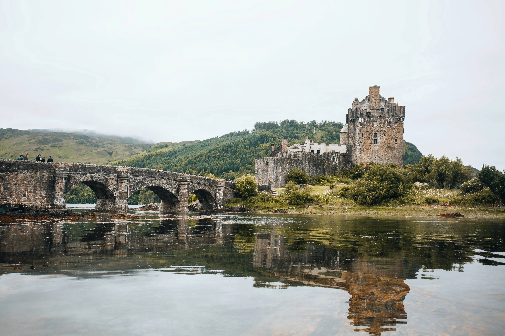

Travel that feels organised, not overmanaged.
Calm guidance, useful detail and a steady pace, so the journey feels easy to settle into from the start.

Experienced guidance, calmly delivered.
My background spans more than a decade in tourism and hospitality, mainly leading guided journeys across Europe.
On tour, I focus on timing, context and the small details that help each day feel settled.
I work across the UK, Ireland and continental Europe, balancing practical coordination with local insight.
The aim is simple: keep the journey clear, calm and well paced.


Tour-specific Welcome Pages.
Dedicated welcome pages for each tour I'm currently directing — alongside the official Trafalgar page for the full itinerary and booking details.

Best of Ireland & Scotland
Celtic Ireland and Scotland, from Dublin through Northern Ireland and into the Highlands, islands and great cities.
Welcome & Tour Tips → Official Trafalgar site →Britain & Ireland Highlights
A compact route through the British Isles, with London, York, Edinburgh, Belfast, Dublin, Cardiff and landmark stops along the way.
Welcome & Tour Tips → Official Trafalgar site →
Grand European
A classic multi-country journey from London through Belgium, Germany, Austria, Italy, Switzerland and France.
Welcome & Tour Tips → Official Trafalgar site →Good touring feels calm, clear and easy to settle into.
Whether it is a scenic drive, city arrival or early departure, the aim is simple: keep the day clear and let the place lead.
Glimpses from journeys that stay with people.
A few images from places visitors tend to remember.




Stay connected.
Simple ways to keep in touch.
Instagram
Find me on Instagram.
Facebook
Connect with me on Facebook.
WhatsApp
Message me directly on WhatsApp.